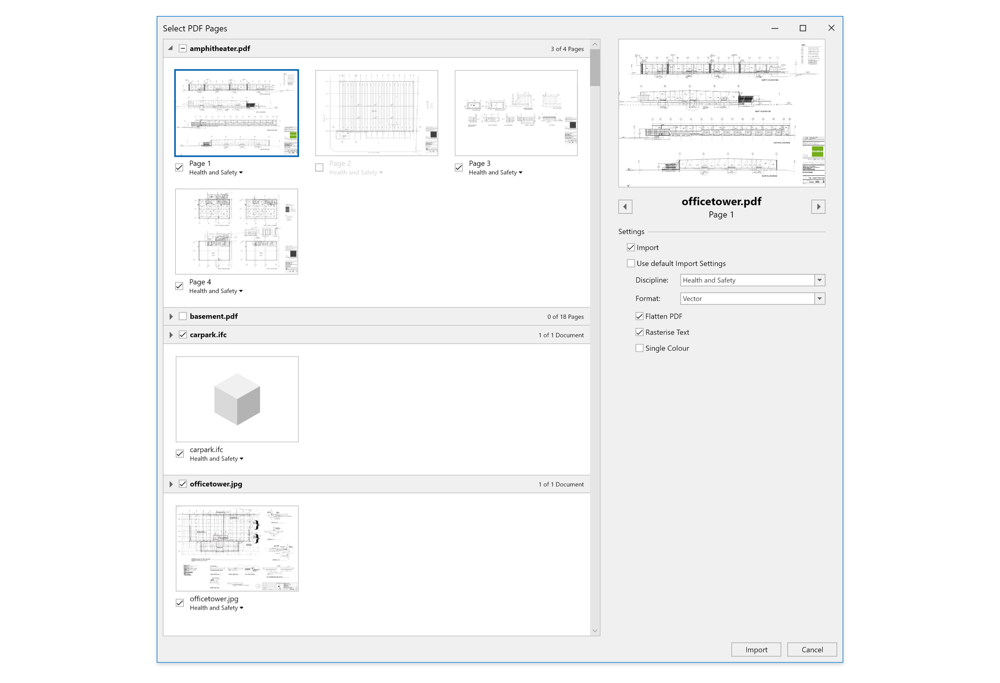

The Challenge
One app, two goals
Cubit Estimating is designed to help Estimators efficiently create estimates for construction projects and in this area it’s an industry leader. An internal focus was put on two areas, multi-user support and improving areas of the aplication that had not been looked at in a while.
The Solution
Continuous improvement
Over the course of my time working on Cubit Estimating I was tasked with looking at a variety of features that touched various aspects of the application. I’d like to detail some of those below:
Trade Locks
One of the goals for the team was to make Cubit Estimating a more multi-user experience. To enable multiple Estimators to work in a job at the same time we added the concept of Trade Locks. Each Trade Package can now be locked to a specific user so only they can edit it. Along with this a job can be opened as shared access or exclusive access to control who can edit it.
User Management
Cubit Estimating already comes with a User Management Console but to support a proper multi-user environment it would need to be beefed up. The concept of Teams, Roles, and Permissions were added and could all be managed through the Console. On top of that the look and feel was freshened up to make it consistent with the main application.
Inherited Price Lists
Price Lists are a feature that allows Estimators to keep track of the prices of items so they can quickly build out estimates. Cubit Estimating allows an Estimator to have multiple Price Lists but they are all individual. Inherited Price Lists are a way to bring those individual Price Lists together. Now you can have an Australian Price List that flows in to a NSW Price List that flows in to a Sydney Price List. This enables Estimators to quickly build out Price Lists with similar item sets, modify where needed, and keep all of them in sync if changes need to be made in the future.
Improved Plan Imports
Importing plans is one of those features that gets added and then isn’t looked at for years. Now was the time to improve it with the ability to import multiple documents at once, applying properties on import, and assigning disciplines to documents (a feature that comes from Cubit Select).
Redesigned Icon Set
As we were adding all of these new features we took the opportunity to make Cubit Estimating feel fresh by creating a brand new icon set for the entire application (featuring over 300 icons). It was important that the icon set felt like it belonged to the modern Windows style, so ribbon icons were designed with a flat appearance and toolbar icons use a monochrome appearance. For the first time in Cubit Estimating every icon had both light and dark mode variants.
Prototypes

The Process
Familiarity and renewal
Coming onboard to an application that has a long history I had two goals. Modernising it to feel fresh and making processes much simpler to work with. I felt it was important that I did not throw out existing interfaces that users were quite familiar with but instead to polish and enhance what was already there to make the transition as smooth as possible.